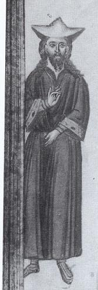
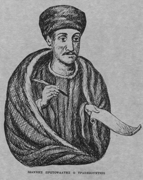
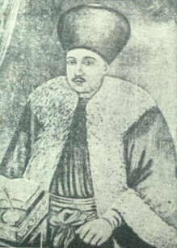
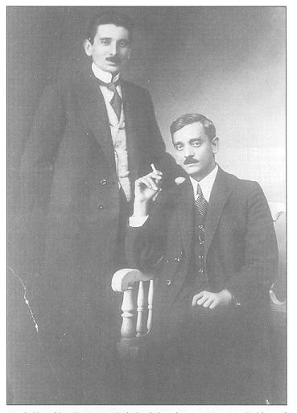

Ψαλτοφωτογραφίες / Gallery
Συλλογή από διάφορες πηγές / Α collection from various sources
St. John of Damascus 8th cent.
Ioannis "o Glykys" 12th cent. (from Emm. Giannopoulos's book)

St. Ioannis Koukouzelis 12th cent. (from Emm. Giannopoulos's book)
Psaltai in Byzantine Times (ms illustration) (from Emm. Giannopoulos's book)
Psaltai in Byzantine Times (ms illustration) (from Emm. Giannopoulos's book)
Psaltai and Canonarchoi in Byzantine times (from the site of the 1st Conference
of Byzantine Musicology)
Old composers Chrysaphes "o Neos", Petros Bereketis, Petros Lambadarios, Chrysaphes
"o Palaios" (from Emm. Hatziyakoumis' book "Χειρόγραφα Εκκλησιαστικής Μουσικής 1453-1820", έκδοση Εθνικής Τράπεζας της Ελλάδος, Αθήνα 1980, Παράρτημα αρ. Εικόνων 23, 1-3).
Old composers Petros Byzantios, Daniel Protopsaltis, Ioannis Protopsaltis, Iakovos
Protopsaltis (from Emm. Hatziyakoumis' book "Χειρόγραφα Εκκλησιαστικής Μουσικής 1453-1820", έκδοση Εθνικής Τράπεζας της Ελλάδος, Αθήνα 1980, Παράρτημα αρ. Εικόνων 23, 1-3).
Iakovos Protopsaltis 18th cent.
Balasios the Priest and Nomophylax 17th cent.
Balasios the Priest and Nomophylax 17th cent. (from K. Psaxos' "Parasemantike")

Ioannis Protopsaltis (Trapezountios) 18th cent. (from K. Psaxos' "Parasemantike")

Petros Bereketis "the sweet". One of the most famous composers of the 18th c. He
is considered the "father" of the Kalophonic Heirmoi composition style.
Petros Peloponnesios (Lambadarios) 18th cent. (from K. Psaxos' "Parasemantike")
Petros Protopsaltis (Byzantios) 18th/19th cent. (from K. Psaxos' "Parasemantike")
Iakovos Peloponnesios Protopsaltis 18th cent. (from K. Psaxos' "Parasemantike")
Archimandrite Chrysanthos of Madyta 19th cent. (offered by Monk Filotheu)
Gregorios Byzantios Protopsaltis 19th cent. (from K. Psaxos' "Parasemantike")

Gregorios Byzantios Protopsaltis 19th cent. (image from cmkon.org)
Konstantinos Byzantios Protopsaltis 19th cent.
Theodoros Fokaeus 19th cent. (from cmkon.org)
Georgios Raidestinos Protopsaltis 19th cent.

Iakovos Nafpliotis Protopsaltis 20th cent. (from cmkon.org)
Eustathios Viggopoulos 20th cent. (from cmkon.org)

K. Psaxos 20th cent.
Konstantinos Pringos Protopsaltis 20th cent. (from M. Xatziyakoumis' CD series)

Thrasyvoulos Stanitsas Protopsaltis 20th cent. (from M. Xatziyakoumis' CD series)
A. Petroxeilos 20th cent. (from cmkon.org)
Basileios Nikolaidis 20th cent. (from ieropsaltis.com)
Dimitrios Magouris 20th cent.
Basileios Emmanouilidis 20th cent. (from M. Xatziyiakoumis CD series)
Eleutherios Georgiadis 20th cent. (from ec-patr.net)
Nikolaos Danielidis 20th cent. (from ec-patr.net)
Leonidas Asteris 20th cent. (from cmkon.org)
Dimitrios Ioannidis (offered by D. Ioannidis)
A. Pettas 20th cent. (from ieropsaltis.com)
Georgios Karakasis 20th cent. (from cmkon.org)
E. Xatzimarkos 20th cent. (from ieropsaltis.com)
M. Tsamkiranis 20th cent.
Prof. Gregorios Stathis 20th cent.

Angelos Kounas (Protopsaltis of Pyrgos, Ilia) 20th cent.
L. Angelopoulos (Protopsaltis of the Arch. of Constantinople) 20th cent.
Alexandros Papadiamantis 20th cent.
D. Paikopoulos (2nd Domestichos) 20th cent. (from cmkon.org)
Fr. Daniel Danielaios 20th cent.
Dcn. Dionysios Firfiris 20th cent. (from M. Xatziyakoumis' CD series)

Fr. Dositheos Paraskevaidis (Katounakiotis) 20th cent.
Hieromonk Neofit Rilski (Bulgarian composer, 19th cent.)
Schemamonk Nektarie Protopsaltis of the Romanian skete on Mt. Athos 19th cent.
Theodoros Basilikos 20th cent. (from his website)
Leonidas Sfikas 20th cent. (from M. Xatziyakoumis' CD series)
Metr. Nikodemos Valindras 20th cent. (from M. Xatziyakoumis' CD series)
Fr. Georgios Tsetsis 20th cent. (from M. Xatziyakoumis' CD series)

Simon Karas 20th cent.
Prof. Antonios Alygizakis 20th cent.

Avraam Eythemiadis (Archon Mousikodidaskalos) 20th cent.
Mitri El Murr Protopsaltis of the Church of Antioch 20th cent. (scanned from his
Anastasimatarion in Arabic, kindly offered by Carlos Nasr)

Harilaos Taliadoros 20th cent. (from ieropsaltis.com)
Georgios Syrkas 20th cent. (from ieropsaltis.com)
Spyridon Peristeris 20th cent. (from ieropsaltis.com)
Aggelos Margaritis 20th cent. (from ieropsaltis.com)

Spyridon Maidanoglou 20th cent. (from ieropsaltis.com)
Lykourgos Petridis 20th cent. (from cmkon.org)
Konstantinos Panas 20th cent. (from ieropsaltis.com)

Ioannis Palasis - Konstantinos Pringos 20th cent.
Ioannis Arvanitis 20th cent.
Georgios Amargianakis 20th cent. (from
here
)
Stylianos Tsolakidis 20th cent. (from G. K. Michalakis)
Dcn. Anthimos (of Mesologgi) 19th cent. (from
here )
Dimitrios Nerantzis 20th cent. (from M. Xatziyakoumis' CD series)
Anton Pann 19th cent, Romania (offered by Monk Filotheu)
Macarie Ieromonahul 19th cent, Romania (offered by Monk Filotheu)
Stefan Popescu 19th cent, Romania (offered by Monk Filotheu)
Theodor Georgescu 19th cent, Romania
Apostolos Konstas' Diagram 19th cent. (from K. Psaxos' "Parasemantike")
The right analogion of the Ecumenical Patriachate. This is where the Protopsaltis
and his choir stand (photographed and offered by B. Zacharis).

A manuscript from Xenophontos Monastery (Mt Athos) (photo from
here)
A manuscript for the Romanian monastery of Putna
The Millenium Celebration of the Holy Monastery of Xenophon, Mt Athos, 1998. Published
in a double CD, see
photos and music
samples
A manuscript decoration drawing of the "wise parallagi (sign reading)" of St. Ioannis
Koukouzelis

{kind=link}
{kind=link}
{kind=link}
{kind=link}
{kind=link}
{kind=link}
{kind=link}
{kind=link}
{kind=link}
{kind=link}
{kind=link}
{kind=link}
{kind=link}
{kind=link}
{kind=link}
{kind=link}
{kind=link}
{kind=link}
{kind=link}
{kind=link}
{kind=link}
{kind=link}
{kind=link}
{kind=link}
{kind=link}
{kind=link}
{kind=link}
{kind=link}
{kind=link}
{kind=link}
{kind=link}
{kind=link}
{kind=link}
{kind=link}
{kind=link}
{kind=link}
{kind=link}
{kind=link}
{kind=link}
{kind=link}
{kind=link}
{kind=link}
{kind=link}
{kind=link}
{kind=link}
{kind=link}
{kind=link}
{kind=link}
{kind=link}
{kind=link}
{kind=link}
{kind=link}
{kind=link}
{kind=link}
{kind=link}
{kind=link}
{kind=link}
{kind=link}
{kind=link}
{kind=link}
{kind=link}
{kind=link}
{kind=link}
{kind=link}
{kind=link}
{kind=link}
{kind=link}
{kind=link}
{kind=link}
{kind=link}